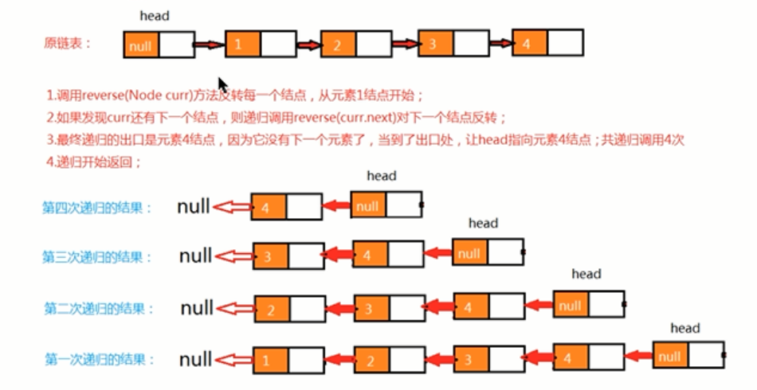

概述：
线性表是最基本的、最简单的、也是最常用的一种数据结构。一个线性表是n个具有相同特征的数据元素的有限序列。
前驱元素：若A元素在B元素的前面，则称A为B的前驱元素。
后继元素：若B元素在A元素的后面，则称B为A的后继元素。
线性表的特征： 数据元素之间具有一种“一对一”的逻辑关系。
1、第一个数据元素没有前驱，这个数据元素称为头结点。
2、最后一个数据元素没有后继，这个数据元素被称为尾节点。
3、除了第一个和最后一个数据元素外，其他数据元素有且只有一个前驱和一个后继。
线性表的分类：
线性表中数据存储的方式可以是顺序存储，也可以是链式存储，按照数据的存储方式不同，可以把线性表分为顺序表和链表。
1.1顺序表
顺序表是在计算机内存中以数组的形式保存的线性表，线性表的顺序存储就是指用一组地址连续的存储单元，依次存储线性表中的各个元素。
1.1.1顺序表的实现
顺序表API设计：
类名 | SequenceList<T> |
构造方法 | SequenceList(int capacity)创建容量为capacity的SequenceList对象 |
成员方法 | 1、public void clear()空置线性表 2、public boolean isEmpty判断线性表是否为空，是返回true，否返回false 3、public int length获取线性表中元素的个数 4、public T get(int i)读取并返回线性表中的第i个元素的值 5、public void insert(int i,T t)在线性表的第i个元素之前插入一个值为t的数据元素 6、public void insert(T t)向线性表中添加一个元素t 7、public T remove(int i)删除并返回线性表中第i个数据元素 8、public int indexOf(T t)返回线性表中首次出现的指定元素的数据元素的位序号，若不存在，则返回-1. |
| 成员变量 | 1、private T[] eles 存储元素的数组 2、private int N:当前元素的长度 |
public class SequenceList<T> implements Iterable<T>{
private T[] eles;
private int N;
public SequenceList(int capacity){
//初始化数组
this.eles=(T[])new Object[capacity];
//初始化长度
this.N=0;
}
public void clear(){
this.N=0;
}
public boolean isEmpty(){
return N==0;
}
public int length(){
return N;
}
public T get(int i){
return eles[i];
}
public void insert(T t){
if(N==eles.length){
resize(2*eles.length);
}
eles[N++]=t;
}
public void insert(int i,T t){
if(N==eles.length){
resize(2*eles.length);
}
//先把i索引处的元素及其后面的元素依次向后移动一位
for(int j=N-1;j>=i;j--){
eles[j+1]=eles[j];
}
//再把t元素放到i索引处即可
eles[i]=t;
//总长度加1
N=N+1;
}
public T remove(int i){
//记录索引i处的值
T current =eles[i];
//索引i后面的元素依次向前移动一位
for(int j=i;j<N-1;j++){
eles[j]=eles[j+1];
}
//元素个数-1
N--;
if(N<eles.length/4){
resize(eles.length/2);
}
return current;
}
public int indexOf(T t){
for(int i=0;i<N;i++){
if(eles[i].equals(t)){
return i;
}
}
return -1;
}
//实现容器的遍历
public Iterator<T> iterator(){
return new SIterator; //定义的内部类实现Iterator接口
}
private class SIterator implements Iterator{
private int cusor;
public SIterator(){
this.cusor=0;
}
//判断容器之中还有没有下一个元素
@Override
public boolean hasNext(){
return cusor<N;
}
//返回容器元素
@Override
public Object next(){
return eles[cusor++];
}
}
//根据参数newSize，重置eles的大小
public void resize(int newSize){
//定义一个临时数组，指向原数组
T[] temp=eles;
//创建新数组
eles=(T[])new Object[newSize];
//把原数组的数据拷贝到新数组即可
for(int i=0;i<N;i++){
eles[i]=temp[i];
}
}
}
顺序表的遍历：
一般作为容器存储数据，都需要向外部提供遍历的方式，因此我们需要给顺序表提供遍历方式。
在java 中，遍历集合的方式一般都是用foreach循环，如果想让我们的SequenceList也能支持foreach循环，则需要做如下操作：
1、让SequenceList实现Iterable接口，重写iteration方法；
2、在SequenceList内部提供一个内部类Slterator实现Iterator接口，重写hasNext方法和next方法；
顺序表的容量可变
考虑容器的容量伸缩性，其实就是改变存储元素的数组的大小，那需要在什么时候改变数组的大小呢？
1、添加元素时，应该检查当前数组的大小是否能够容纳新的元素，如果不能容纳，则需要创建新的容量更大的数组，我们创建一个是原数组两倍容量的新数组存储元素。
2、移除元素时，应该检查当前数组大小是否太大，比如正在用100个容量的数组存储10个元素，这样就会造成内存空间的浪费，应该创建一个容量更小的数组存储元素。如果发现数据元素的数量不足数组容量的1/4，则创建一个是原数组容量1/2的新数组存储元素。
顺序表的时间复杂度：
get(i):O(1);
insert(int i,T t):O(n);
remove(int i):O(n);
由于顺序表的底层是有数组实现的，数组的长度是固定的，所以在操作过程中可能会涉及到容器的扩容操作，这样会导致顺序表在使用过程中的时间复杂度不是线性的，在某些需要扩容的节点处，耗时会突增，尤其是元素越多，这个问题越明显。
java中的ArrayList实现
java中的ArrayList集合底层也是一种顺序表，使用数组实现，同样提供了增删改查以及扩容等功能。
ArrayList源码：
1、用数组实现；
2、有扩容操作；
3、提供了foreach遍历方式；
链表
节点API设计
类名 | Node<T> |
构造方法 | Node(T t,Node next):创建Node对象 |
成员变量 | T item:存储数据 Node next：指向下一个节点 |
节点类实现
public class Node<T>{
//存储元素
public T item;
//指向下一个节点
public Node next；
public Node(T item,Node next){
this.item=item;
this.next=next;
}
}
单向链表
单向链表是链表的一种，它由多个节点组成，每个节点都由一个数据域和一个指针域组成，数据域用来存储数据，指针域用来指向其他后继节点，链表的头结点的数据域不存储数据，指针域指向第一个真正存储数据的节点。
单向链表API设计
类名 | LinkList<T> |
构造方法 | LinkList():创建LinkList对象 |
成员方法 | 1、public void clear():空置线性表 2、public boolean isEmpty():判断线性表是否为空，是返回true，否返回false 3、public int length():获取线性表中元素的个数 4、public T get(int i):读取并返回线性表中第i个元素的值 5、public void insert(T t):往线性表中添加一个元素 6、public void insert(int i,T t):在线性表的第i个元素之前插入一个值为t的数据元素 7、public T remove(int i):删除并返回线性表中第i个数据元素 8、public int indexOf(T t):返回线性表中首次出现指定的数据元素的位序号，若不存在，则返回-1 |
成员内部类 | private class Node<T>节点类 |
成员变量 | 1、private Node head：记录首节点 2、private int N:记录链表的长度 |
单向链表代码实现 day02 46
public
双向链表：
双向链表也叫双向表，是链表的一种，它由多个节点组成，每个节点都由一个数据域和两个指针域组成，数据域用来存储数据，其中一个指针域用来指向其后继节点，一个指针域用来指向其前驱节点。链表的头结点的数据域不存储数据，指向前驱节点的指针域值为null，指向后继节点的指针域指向第一个真正存储数据的节点。
按照面向对象的思想，我们需要设计一个类，来描述节点这个事物，由于节点是属于链表的，所以我们把节点类作为链表类的一个内部类来实现。
节点的API设计
类名 | Node<T> |
构造方法 | Node(T t,Node pre,Node next):创建Node对象 |
成员变量 | T item:存储数据 Node next：指向下一个节点 Node pre：指向上一个节点 |
双向链表API设计
类名 | TowWayLinkList<T> |
构造方法 | TowWayLinkList():创建TowWayLinkList对象 |
成员方法 | 1、public void clear():空置线性表 2、public boolean isEmpty():判断线性表是否为空，是返回true，否返回false 3、public int length();获取线性表中元素的个数 4、public T get(int i):读取并返回线性表中的第i个元素 5、public void insert(T t):往线性表中添加一个元素 6、public void insert(int i,T t):在线性表中的指定位置插入一个值为t的数据元素 7、public T remove(int i):删除并返回线性表中的第i个数据元素 8、public T getFirst():获取第一个元素 9、public int indexOf(T t):返回线性表中首次出现的指定的数据元素的位序号，若不存在，则返回-1 10、public T getLast():获取最后一个元素 |
成员内部类 | private class Node<>:节点类 |
成员变量 | 1、private Node first：记录首节点 2、private Node last：记录尾节点 3、private int N记录链表的长度 |
双向链表代码实现（day02 50）
java中的 LinkedList实现
java中的LinkedList集合也是使用双向链表实现，并提供了增删改查等相关方法。
链表的时间复杂度：
get(int i)：时间复杂度为O(n)
insert(int i,T t):时间复杂度为O(n)
remove(int i):时间复杂度为O(n)
相比于顺序表，链表插入和删除的时间复杂度虽然一样，但任然具有很大的优势，因为链表的物理地址是不连续的，它不需要预先指定存储空间大小，或者在存储过程中涉及到扩容等操作，同时它没有涉及到元素的交换。
相比于顺序表，链表的查询操作性能会比较低，因此，如果我们的程序中查询操作比较多，建议使用顺序表，增删操作比较多，建议使用链表。
链表反转：（面试）
需求：原链表中数据为：1->2->3->4
反转后链表中数据为：4->3->2->1
反转API：
public void reverse() | 对整个链表反转 |
public Node reverse(Node curr) | 反转链表中的某个节点curr，依次递归调用反转每一个节点，直到最后一个节点反转完毕，整个链表就反转完毕 |
使用递归可以完成反转，递归反转其实就是从原链表的第一个存数据的节点开始，依次递归调用反转每一个节点，直到把最后一个节点反转完毕，整个链表就反转完毕了。

public void reverse(){
if(isEmpty()){
return;
}
reverse(head.next){
}
}
public Node reverse(Node curr){
if(curr.next==null){
head.next=curr;
return curr;
}
reverse(curr.next).next=curr;
return curr;
}

快慢指针
快慢指针指的是定义两个指针，这两个指针的移动速度一快一慢，以此来制造出自己想要的差值，这个差值可以让我们找到链表上相应的节点。一般情况下，快指针移动的步长为满指针的两倍。
快慢指针可以解决的问题：
1、中间值问题：（比如说，一个链表有七个节点，需要获取的是第四个节点的值）

API
T getMid(Node<T> first){}//返回链表中间节点的值
T getMid(Node<T> first){
Node<T> fast=first;
Node<T> show=first;
while(fast!=null&&fast.next!=null){
fast=fast.next.next;
show=show.next;
}
return slow.value;
}
2、单项链表是否有环问题：


API
boolean isCircle()//判断单向链表是否有环
boolean isCircle(){
Node<T> fast=first;
Node<T> slow=first;
while(fast!=null&&fast.next!=null){
//变换fast和show
fast=fast.next.next;
show=next;
if(fast.equals(slow)){
return true;
}
}
return false;
}
3、有环链表环的入口问题：
理论：当快慢指针相遇时，可以判断出链表中有环，这是重新设定一个新指针指向链表的起点，且步长与慢指针一样为1，则慢指针与新指针相遇的节点就是环的入口。
API
Node getEntrance(Node<T> first)//返回有环链表的环入口节点
public Node getEntrance(Node<T> first){
//定义快慢指针
Node<T> fast=first;
Node<T> slow=first;
Node<T> index=null;
while(fast!=null&&fast.next!=null){
fast=fast.next.next;
slow=slow.next;
if(fast.equals(slow)){
index=first;
continue;
}
if(index!=null){
index=index.next;
if(index.equals(slow)){
break;
}
}
}
return index;
}
循环链表：
循环链表，将单向链表中的尾节点指向头结点即可。
循环链表的应用：
约瑟夫问题：
问题描述： 
问题转换：
41个人坐一圈，第一个人编号为1，第二个人编号为2，第n个人编号为n；
1、编号为1的人开始从1报数，依次向后，报数为3的那个人退出圈；
2、自退出那个人开始的下一个再次从1开始报数，依次类推；
3、求最后退出的那个人的编号。
图示：

解题思路：
1、构建含有41个节点的单向循环链表，分别存储1-41的值，分别代表这41个人。
2、使用计数器count，记录当前报数的值。
3、遍历链表，每循环一次，count++。
4、判断count的值，如果是3，则从链表中删除这个节点并打印节点的值，把count重置为0；
解决约瑟夫问题：
public static void main(String[] args){
//构建循环链表，包含41个节点，分别存储1-41之间的值
Node<Integer>first=null;
Node<Integer>pre=null;
for(int i=1;i<=41;i++){
//如果是第一个节点
if(i==1){
first=new Node<>(i,null);
pre=first;
continue;
}
//如果不是第一个节点
Node<Integer>newNode=new Node<>(i,null);
pre.next=newNode;
pre=newNode;
//如果是最后一个节点
if(i==41){
pre.next=first;
}
}
//需要count计数器，模拟报数
int count=0;
//记录每次遍历拿到的节点，默认从首节点开始
Node<Integer> n=first;
//记录当前节点的上一个节点
Node<Integer>before=null;
//遍历循环链表
while(n!=n.next){
//模拟报数
count++；
//判断当前报数是不是3
if(count==3){
//如果是3，就把当前节点删除调用，打印当前节点，重置count=0，让当前节点n后移
before.next=n.next;
System.out.print(n.value+",");
count=0;
n=n.next;
}else{
//如果不是3，让before变为当前节点，让当前节点后移；
before=n;
n=n.next;
}
}
//打印最后一个元素：
System.out.print(n.value);
}
栈
先进后出
数据进入到栈的动作称为压栈，数据从栈中出去的动作称为弹栈。
栈的API设计
类名 | Stack<T> |
构造方法 | Stack()：创建Stack对象 |
成员方法 | public boolean isEmpty()//判断栈是否为空，是返回true，否返回false public int size():获取栈中元素的个数 public T pop()弹出栈顶元素 public void push(T t)向栈中压入元素t |
成员变量 | private Node head:记录首节点 private Node last;记录尾节点 private int N:当前栈的元素个数 |
成员内部类 | private class Node：节点类 |
栈代码实现：（链表实现）（day03 66）
栈代码实现：（数组实现）
栈的应用案例
1、括号匹配问题：
问题描述：给定一个字符串，里面可能包含“（）”小括号和其他字符，请编写程序检查该字符串中的小括号是否成对出现。


//遍历字符串，每遇到一个左括号，就将左括号压栈，遇到一个右括号就弹出一个左括号。
public boolean isMatch(String str){
//1、创建栈对象，用来存储左括号
Stack<String> stack=new Stack();
//2、从左往右遍历字符串
for(int i=0;i<str.length();i++){
String currChar=str.charAt(i)+"";//将字符转为字符串
//3、判断当前字符是否为左括号，如果是，则把字符放入到栈中
if(currChar.equals("(")){
stack.push(currChar);
//4、继续判断当前字符是否右括号，如果是，则从栈中弹出一个左括号，并判断弹出的结果是否为null，如果为null证明没有匹配的左括号，如果不为null，则证明有匹配的左括号。
}else if(currChar.equals(")")){
String pop=stack.pop();
if(pop==null){
return false;
}
}
}
//5、判断栈中还有没有剩余的左括号，如果有则证明括号不匹配
if(stack.size()==0){
return true;
}else{
return false;
}
}
2、逆波兰表达式求值问题
（1）中缀表达式：
中缀表达式就是平时生活中使用的表达式，例如：1+3*2,2-(1+3)等等，中缀表达式的特点是：二元运算符总是置于两个操作数中间。
中缀表达式是人们最喜欢的表达方式，因为简单，易懂，但对于计算机来说就不是这样了，因为中缀表达式的运算顺序不具有规律性。不同的运算符具有不同的优先级，如果计算机执行中缀表达式，需要解析表达式语义，做大量的优先级，相关操作。
（2）逆波兰表达式（后缀表达式）
后缀表达式的特点：运算符总是放在跟它相关的操作数之后。
例如
中缀表达式 | 逆波兰表达式 |
a+b | ab+ |
a+(b-c) | abc-+ |
a+(b-c)*d | abc-d*+ |
a*(b-c)+d | abc-*d+ |
需求：给定一个包含加减乘除四种运算的逆波兰表达式的数组表示方式，求出该逆波兰表达式的结果。
public static int caculate(String[] notaion){
return -1;
}


队列
先进先出
队列的API设计
类名 | Queue |
构造方法 | Queue()：创建Queue对象 |
| 成员方法 | public boolean isEmpty()：判断队列是否为空，是返回true，否返回false public int size():获取队列中元素的个数 public T dequeue():从队列中拿出一个元素 public void enqueue(T t):往队列中插入一个元素 |
成员变量 | private Node head：记录首节点 private int N：当前栈的元素个数 private Node last：记录最后一个节点 |
成员内部类 | private class Node：节点类 |
队列的实现
单向链表实现
栈：从头插，从头出。
队列：从尾插，从头出。